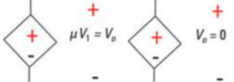
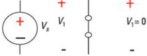

Fuentes de Energía en Circuitos Eléctricos
Las fuentes de energía en un circuito pueden ser independientes, como baterías y generadores, o dependientes, como transistores y amplificadores operacionales...
Fuentes Dependientes e Independientes
Fuentes Independientes
Las fuentes independientes son componentes en un circuito eléctrico que proporcionan una tensión (voltaje) o una corriente constante que no depende de ningún otro elemento del circuito. Piensa en ellas como baterías o generadores que siempre suministran la misma energía sin importar lo que ocurra en el circuito.
- Fuente de Voltaje Independiente: Proporciona un voltaje constante. Ejemplo: una batería de 9V siempre da 9 voltios.
- Fuente de Corriente Independiente: Proporciona una corriente constante. Ejemplo: un generador de corriente que siempre da 2 amperios.

Fuentes Dependientes
Las fuentes dependientes, también conocidas como fuentes controladas, son componentes en un circuito eléctrico cuya tensión o corriente depende de otra tensión o corriente en el circuito. Estas fuentes se utilizan para modelar dispositivos electrónicos como amplificadores y transistores.
- Fuente de Voltaje Dependiente: Su voltaje depende de otra corriente o voltaje en el circuito. Se representa como una fuente de voltaje con un símbolo de control (generalmente una flecha o una letra) que indica de qué depende. Ejemplo: un amplificador que multiplica el voltaje de entrada por una constante.
- Fuente de Corriente Dependiente: Su corriente depende de otra corriente o voltaje en el circuito. Se representa de manera similar a la fuente de voltaje dependiente. Ejemplo: un transistor que ajusta su corriente de salida en función de la corriente de entrada.
Ejemplo Básico
Imagina un circuito con una batería de 9V y una fuente de voltaje dependiente que proporciona un voltaje igual a 2 veces el voltaje en otro punto del circuito. Si el voltaje en ese punto es 3V, entonces la fuente dependiente dará 6V (2 x 3V).

Resumen
- Fuentes Independientes: Proporcionan un voltaje o corriente constante, independientemente de otros elementos del circuito. Ejemplo: baterías.
- Fuentes Dependientes: Proporcionan un voltaje o corriente que depende de otra señal en el circuito. Ejemplo: amplificadores.
Estos conceptos son fundamentales para entender cómo funcionan los circuitos eléctricos y cómo se diseñan y analizan dispositivos electrónicos más complejos.